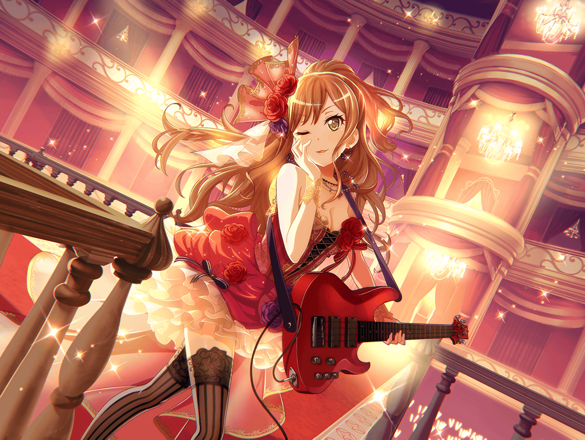

コンビニ
リサ
ありがとうございましたー！
リサ
……今日はあんまりお客さん来ないな～
リサ
モカもいないし、話し相手もいないって少し寂しいかも
リサ
いや、でも仕事は仕事。頑張らないと！
リサ
いらっしゃいませ。こちらのレジにどうぞー♪
リサ
540円になります……
……って、{{userName}}さんじゃん！
リサ
気付いてたなら、声かけてくれればいいのに
リサ
一応働いてるところだし、気を遣った？
今はお客さんもいないし、ちょっとだけなら大丈夫♪
リサ
それと、一応働いてたってどういうこと～？
リサ
まあいいや。
ちょうど誰かと話したい気分だったんだよね
リサ
{{userName}}さんが来てくれて、
ちょうど良かったかも
リサ
んー、悩みっていうか、自分の気持ちを言葉にしたい感じかな？
リサ
まあ、そんな大それたことじゃないんだけど！
リサ
話が気になるって？ そっかそっか。
じゃあ、特別に話してあげる♪
……って、ホントは誰かに聞いてもらいたかったんだけどね！
リサ
実はこの前、バンドの練習がある日に、
急にバイトのヘルプに行くことになってさー
リサ
その日、バイト終わってから、
すぐにみんなのところに戻ったんだけど
リサ
そこでさ、アタシがいないと困る！ って
みんなから言われちゃってさ
リサ
アタシって意外と役に立ってたんだな～って思ったんだ
リサ
ううん、それだけじゃない。素直に嬉しかったんだ。
今まで悩んでたことが吹き飛んじゃうくらいね♪
リサ
今まではね、アタシが一番演奏出来てないから、
みんなの足を引っ張ってるんじゃないかって……
リサ
自分でも分かってたからこそ、Roseliaのメンバーには
迷惑かけないようにって、
とにかく練習しようってずっと思ってたんだよ
リサ
けど、みんなから『アタシが必要』って言ってもらえて……
Roseliaの役に立ってたんだな～って！
リサ
自分じゃそんなこと考えたこともなかった。
だって、クッキー焼いたり、空気読んだりって、
そういうこと自然とやっちゃうんだよね
リサ
おせっかいって言われるかもしれないけど、
誰かのために何かをしたり、
相手の喜ぶことを考えること自体が……
リサ
アタシ、好きなんだと思う
リサ
それに、Roseliaのみんなで最高の演奏がしたい。
そんな風に思ってたからこそ、
みんなの事を良く見ることができたのかな
リサ
意外って思った？
アタシって周りの雰囲気とか気になる性格なんだよね
リサ
こんな性格だからこそ、
Roseliaの役に立ってたのかな。
……自分の良さって、意外と自分じゃ分からないもんだね
リサ
それでね、バイトが終わって、
すぐにスタジオに行ったんだけどさ……
リサ
牛乳はこぼしてるわ、友希那は転んでいるわで、
とにかく大変なことになっててさ、
すぐに手分けをして片付けたんだけど……
リサ
それを片付け終わったら、アタシのことが必要だー！ って
あこは泣きそうになりながら言ってたんだ。
可愛いやつめ〜ってつい思っちゃった
リサ
燐子もね、アタシがいると安心するって言ってくれたんだ。
いや〜、そんなこと言われるとジーンとくるよね
リサ
あ、それと紗夜も『今後は必ず練習には参加してください』
なんて言ってくれて。意外も意外だよね。
でも必要って思ってもらえたのはすごく嬉しい
リサ
それに、友希那は……
Roseliaにはリサが必要だって言ってくれたんだ
リサ
友希那がそんなにアタシのことを
考えてくれてたってことに、
少し泣きそうになっちゃった
リサ
みんなが褒めるようなことばっかり言うから、
くすぐったい気分になったけど
リサ
それ以上に、人に頼られるのってうれしいじゃん？
だから、アタシはこれからも
みんなに頼ってもらいたいって思ったんだ♪
リサ
これが今の素直な気持ち！
人に話すのやっぱり恥ずかしいな！ あはは～
リサ
……全然ヘンじゃない？ そっか。
真面目に聞いてくれてありがと♪
リサ
アタシさ……
友希那のことほっとけなくてRoseliaに入ったけど、
今はそれだけじゃなくて……
リサ
Roseliaっていうバンドが好きなんだ
リサ
友希那が笑っていられて、燐子は少しずつ話せるようになって、
紗夜は前よりトゲがなくなって、
あこは相変わらずいつも通りで……
リサ
その全部がアタシ……大切だし！
リサ
だから、これからもずっとRoseliaの一員として、
みんなと一緒にいたいなって思ってる！
リサ
そのためにも、まずは自分にしかできないこと……
みんなにもっとも〜っと頼ってもらえるようになって、
Roseliaの役に立っていく！
リサ
こんなこと{{userName}}さんに言われても困るよね
リサ
は～っ、誰かに話したかったんだ。スッキリしたっ！
リサ
話し聞いてくれてありがとね♪
リサ
はい、じゃあこれ……おつり。
商品も忘れないようにしてよ
リサ
ありがとうございました～。
またのお越しをお待ちしておりまーすっ
リサ
それと、これからもRoseliaのサポートよろしくっ♪